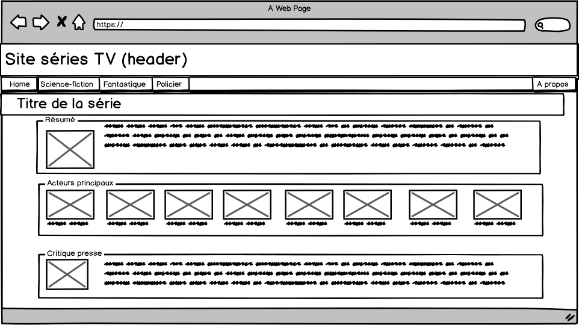
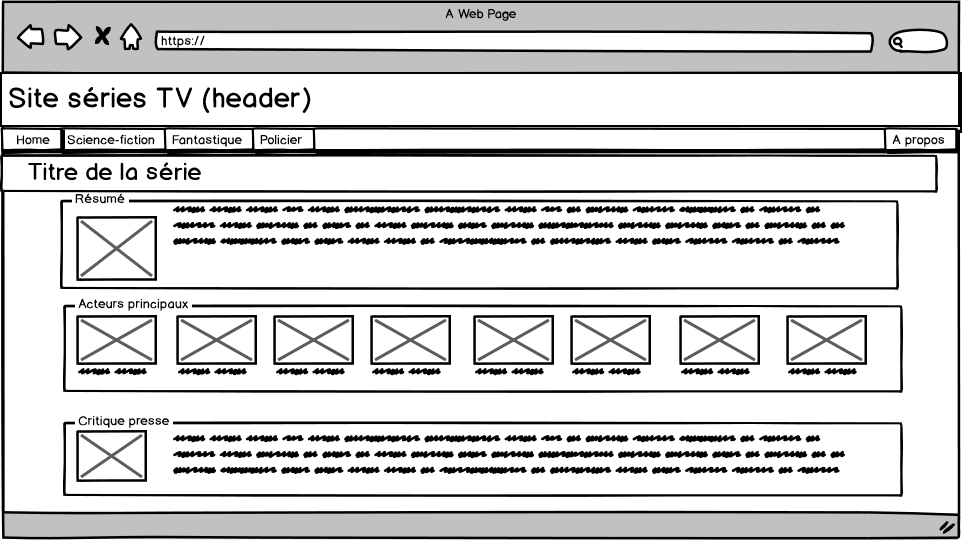

A propos
Un site web présenté par :
BONCI Jeremy
CRINON Nicolas
et
Thème sélectionné : séries TV
URL du site : https://webetu.iutnc.univ-lorraine.fr/www/bonci1u/Projet_TV/html/enter.html
Raccourci vers la page

 



Conclusion
Ce travail conclut le module "interface web". Après vingt-quatre heures de formation, nous
sommes capables de céer un site web avec les outils utilisés en cours.
Nous avons codé un site certes simple, en utilisant des lignes de codes basiques, mais tout à fait
fonctionnel.
Les quelques difficultés rencontrées lors de la création de ce site étaient justement les rares éléments
utilisés
non appris en cours pour donner de l'esthétisme à la page d'accueil, à savoir le mouvement perpétuel d'une
image,
et aussi le bandeau de navigation qui est présent sur les autres pages.